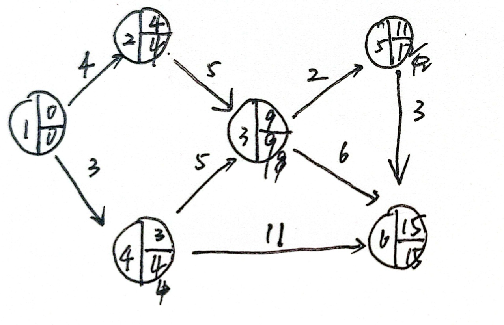
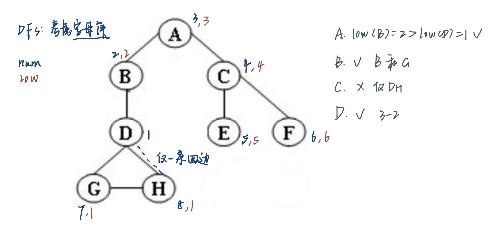

图
约 3306 个字 186 行代码 14 张图片 预计阅读时间 13 分钟
1 基础知识

1）结构体声明（可能给了）
typedef struct AdjVNode *PtrToAdjVNode;
struct AdjVNode{
Vertex AdjV;
PtrToAdjVNode Next;
};
typedef struct Vnode{
PtrToAdjVNode FirstEdge;
} AdjList[MaxVertexNum];
typedef struct GNode *PtrToGNode;
struct GNode{
int Nv;
int Ne;
AdjList G;
};
typedef PtrToGNode LGraph;
2）拓扑排序
- 拓扑序：对于任意两个顶点 \(i,j\)，如果 \(i\) 是 \(j\) 的前任，则在线性顺序中 \(i\) 要出现在 \(j\) 之前
- 每处理完一个顶点 V 后，就需要让从 V 出发与 V 邻接的顶点的入度 -1，相当于在图上移除了顶点 V 以及它的所有出边
- 入队：V目前的入度是0
拓扑排序的流程-AI版
-
第一步：初始化。
* 计算图中所有顶点的入度。
* 找到所有入度为0的顶点，把它们放进一个容器里（通常用队列，用栈也可以）。 -
第二步：循环处理。
* 当容器不为空时，不断重复以下操作：
a. 从容器里取出一个顶点V（比如从队列里Dequeue）。这个V就是当前可以“完成”的一个任务。
b. 把V加入到我们的拓扑排序结果序列中（或者直接打印出来）。
c. “解锁”后续课程： 遍历所有从V出发的边<V, W>。对于每一个邻接点W，我们都做一件事：将W的入度减一。
d. 发现新的起点： 在上一步减一后，如果发现某个邻接点W的入度变成了0，这意味着它的所有先修课程都已经被我们处理完了！太好了，它现在是新的“可以开始的点”，立刻把它也放入容器（Enqueue到队列里）。 -
第三步：收尾检查。
* 当循环结束后（容器为空），我们检查一下拓扑排序结果序列里的顶点个数。
* 如果个数等于图的总顶点数，那么恭喜，我们成功找到了一个拓扑排序。
* 如果个数小于图的总顶点数，这意味着什么？说明图中途再也找不到入度为0的点了。这是为什么呢？因为图里存在一个环 (cycle)！陷入了“鸡生蛋、蛋生鸡”的死循环，永远无法完成。
检验拓扑排序的代码：
bool IsTopSeq(LGraph Graph, Vertex Seq[]){
//先计算出度
int degree[Graph->Nv];
for(int i=0;i<Graph->Nv;i++){
degree[i]=0;//初始值为0
}
for(int i=0;i<Graph->Nv;i++){
//遍历邻接的边
PtrToAdjVNode tmp = Graph->G[i].FirstEdge;
while (tmp != NULL) {
degree[tmp->AdjV-1]++;
tmp=tmp->Next;
}
}
for(int i=0;i<Graph->Nv;i++){
if(degree[Seq[i]-1]!=0){
return false;
}
PtrToAdjVNode tmp = Graph->G[Seq[i]-1].FirstEdge;
while (tmp != NULL) {
degree[tmp->AdjV-1]--;
tmp=tmp->Next;
}
}
return true;
}
3）AOE网

- 计算EC：找到第一个事件到最后一个事件之间最长的路
注： 图如果是有环的，因为正成本环(positive-cost cycles)的存在，这种算法无法实现。然而这里已经规定是无环图，所以无需担心
从起点 \(v_0\) 开始，对于任意的 \(a_i = <v, w>\)，我们有
按拓扑序计算
- 计算 LC：从终点 \(v_8\) 开始，对于任意的 \(a_i = <v, w>\)，我们有
$$
LC[8] = EC[8] \quad LC[v] = \min\limits_{(v,w) \in E} {LC[v] - C_{v, w}}
$$按逆向拓扑序计算
- \(<v, w>\) 的空闲时间(slack time) = \(LC[w] - EC[v] - C_{v, w}\)
- 关键活动(critical activity)：空闲时间为0的活动
- 关键路径(critical path)：所有边的空闲时间均为0的路径
4）最短路算法
1. BFS实现：
struct TNode{
int dist;
Vertex path; //存储顶点名称就够了！
};
struct queuestruct{
int head;
int tail;
int* q;
};
typedef struct queuestruct *PtrToQueue;
PtrToQueue init(int n){
PtrToQueue q=(PtrToQueue)malloc(sizeof(struct queuestruct));
q->head=0;
q->tail=0;
q->q=(int*)malloc(n*sizeof(int));
return q;
}
PtrToQueue enqueue(int n,PtrToQueue q){
q->q[q->tail]=n;
q->tail++;
return q;
}
int dequeue(PtrToQueue q){
int tmp=q->q[q->head];
q->head++;
return tmp;
}
int isempty(PtrToQueue q){
if(q->head==q->tail){
return 1;
}
else{
return 0;
}
}
void BFS(LGraph Graph, Vertex S) {
struct TNode tnodes[Graph->Nv];
for(int i=0;i<Graph->Nv;i++){
tnodes[i].dist=1000;
tnodes[i].path=-1;
}
tnodes[S-1].dist=0;
//入队
PtrToQueue q=init(3*MaxVertexNum);
enqueue(S,q);
while(isempty(q)!=1){
int v=dequeue(q);
PtrToAdjVNode tmp=Graph->G[v-1].FirstEdge;
while(tmp!=NULL){
if(tnodes[tmp->AdjV-1].dist==1000){
tnodes[tmp->AdjV-1].dist=tnodes[v-1].dist+1;
tnodes[tmp->AdjV-1].path=v;
q=enqueue(tmp->AdjV,q);
}
tmp=tmp->Next;
}
}
}
2. Dijkstra
伪代码，应该不会真的需要实现：
void Dijkstra(Table T)
{
Vertex V, W;
for(;;) // O(|V|)
{
V = smallest unknown distance vertex;
if (V == NotAVertex)
break;
T[V].Known = true;
for (each W adjacent to V)
if (!T[W].Known)//还没访问到的话
if(T[V].Dist + Cvw < T[W].Dist) // 这步操作被称为“松弛”
{
Decrease(T[W].Dist to T[V].Dist + Cvw);
T[W].Path = V;
} // end-if update W
} // end-for(;;)
} // now work for edge with negative cost
4）网络流
- 在残量图(residual graph) \(G_r\) 中找一条 \(s \rightarrow t\) 的简单路径，该路径被称为增广路径(augmenting path)
- 增广路径的流量为路径上的所有边中最小的流量，用该流量更新流量图(flow graph) \(G_f\)
- 更新 \(G_r\)，并移除流量为0的边
- 如果 \(G_r\)中还存在 \(s \rightarrow t\) 的路径，回到步骤 1，否则终止程序

改进：具有撤销能力。应该不考吧
5）最小生成树
如何理解最小生成树(minimum spanning tree)？
+ “树”：无环且边的数量为 \(|V| - 1\)
因此当图的边数 < \(|V| - 1\)时，该图不存在最小生成树
+ “最小”：保证生成树的所有边的权重和最小
+ “生成”：覆盖所有的顶点
+ 最小生成树存在的充要条件是图\(G\)是连通的
+ 如果在生成树中添加一条边，就会形成一个环
+ 最小生成树是并不一定是唯一的，但最小生成树的总权重是唯一的
5.1 Prim's Algorithm
- 初始情况下，先将一个顶点作为树的根放入树内
- 在每个阶段，添加边(u, v)，满足 (u, v) 的权重是来自已有生成树的顶点 u 和来自生成树外的 v 之间的所有边中权重最小的那条，且不产生环，然后将新的顶点 v添加至树里
- 重复上述步骤，直至所有顶点均在生成树内
可以对着它回忆一下

5.2 Kruskal's Algorithm
- 无向无环图 (Undirected Acyclic Graph): 这种图也被称为 森林 (Forest)。
- 连通分量 (Connected Component): 森林由一个或多个互不相连的部分组成，每一个部分就是一个连通分量。
- 树 (Tree): 森林中的每一个连通分量都是一棵树。
- 树的性质: 对于任何一棵树，如果它有 v 个顶点 (vertices)，那么它一定有 v - 1 条边 (edges)。
方法：维持一片森林（一组树），适用于稀疏图中
- 初始情况下，有 \(|V|\) 棵单个节点构成的树
- 添加一条边，可以合并两棵树。当算法结束时，应当只剩下一棵树。因此，我们很自然地想到使用并查集的算法
- 挑选边（这里假设挑选边 \((u, v)\) ）时要注意的细节：
+ 如果 u, v 在同一个集合内，则不能添加这条边（否则会出现环）
+ 否则加入这条边，使用Union算法将两个集合合并起来
+ 用堆维护未被检验过的最小的边，每当检验一条边时，使用DeleteMin算法

6）DFS
void DFS(Vertex V)
{
visited[V] = true; // mark this vertex to void cycles
for (each W adjacent to V)
if (!visited[W])
DFS(W);
}
- 当且仅当 1 次 DFS 能够遍历所有顶点时，无向图是连通的
- 当我们发现某条边 (v, w) 中的 w 已被标记过，用虚线画出这条边，称作“回边 (back edge)”，表示这条边不包含于生成树里:

关节点 | Articulation Point
-
当
G' = DeleteVertex(G, v)至少有 2 个连通分量时，称v为关节点(articulation point) 或者 割点(cut vertex)换句话说，关节点的移除能够破坏图的连通性
Low(u)的计算公式：
$$
\begin{align}
Low(u) = & \min{Num(u), \min{Low(w)\ |\ w \text{ is a child of }u} \notag \
& , \min{Num(w)\ |\ (u, w) \text{ is a back edge}}} \notag
\end{align}
$$
例子


// Assign Num and compute Parents
void AssignNum(Vertex V)
{
Vertex W;
Num[V] = Counter++;
Visited[V] = ture;
for each W adjacent to V
if (!Visited[W])
{
Parent[W] = V;
AssignNum(W);
}
}
// Assign Low; also check for articulation points
void AssignLow(Vertex V)
{
Vertex W;
Low[V] = Num[V]; // Rule 1
for each W adjacent to V
{
if (Num[W] > Num[V])
{
AssignLow(W);
if (Low[W] >= Num[V])
printf("%v is an articulation point\n", v);
Low[V] = Min(Low[V], Low[W]); // Rule 3
}
else if (Parent[V] != W)
Low[V] = Min(Low[V], Num[W]); // Rule 2
}
}
// Testing for articulation points in one depth-first search
void FindArt(Vertex V)
{
Vertex W;
Visited[V] = True
Low[V] = Num[V] = Counter; // Rule 1
for each W adjacent to V
{
if (!Visited[W])
{
Parent[W] = V;
FindArt(W);
if (Low[W] <= Num[V])
printf("%v is an articulation point\n", v);
Low[V] = Min(Low[V], Low[W]); // Rule 3
}
else if (Parent[V] != W)
Low[V] = Min(Low[V], Num[W]); // Rule 2
}
}
7）欧拉回路
- 欧拉路 (Euler tour)：在笔不离纸的情况下，图上的每条边均被遍历一遍（一笔画）
- 欧拉环 (Euler circuit)：在笔不离纸的情况下，图上的每条边均被遍历一遍，且最后回到起点的位置
- 无向图：
- 当且仅当图是连通的，且每个顶点的度为偶数时，存在欧拉环
- 当且仅当图是连通的，且仅有两个顶点的度为奇数时，存在欧拉路 - 有向图：
- 当且仅当图是弱连通的，且每个顶点的出度 = 入度时，存在欧拉环
- 当且仅当图是弱连通的，且有且仅有一个顶点的出度 = 入度 + 1，有且仅有一个顶点的入度 = 出度 + 1，其余顶点的出度 = 入度时，存在欧拉路
容易犯错的代码错误
- 如果图的编号是从1开始的，直接存进自己开的数组的时候要记得 -1.
-degree[tmp->AdjV-1]
-visited[v-1]
-Graph->G[v-1].FirstEdge
2 理论题
- In a directed graph, the sum of the in-degrees must be equal to the sum of the out-degrees of all the vertices. （True or False）
Answer
T！！
要从边的角度取考虑，尤其是有向图
因为每条边对应的顶点都有一个出度和一个入度，所以所有顶点的出度之和等于入度之和。
- If a directed graph G=(V, E) is weakly connected, then there must be at least |V| edges in G.
×，\(|V|-1\)条边
- If graph G is NOT connected and has 35 edges, then it must have at least （ ） vertices.
Answer
35 条边最少连接 9 个顶点，因此还需再加 1 个顶点，才能使整张图是不连通的，所以共 10 个顶点
- A graph with 90 vertices and 20 edges must have at least （ ） connected component(s).
- A graph with 100 vertices and 12 edges must have at most （ ） connected component(s).
Answer
围绕给的边，我用给的边连的越多，剩下的节点就越少。剩下的都只能一个点成为一个连通分量。
先读题，q1 问至少有多少个连通分量，而 q2 问至多有多少个连通分量。
q1: 20 条边最多连接 21 个顶点（利用环），这 21 个顶点形成 1 个连通分量，再加上剩余 69 个单独的顶点，因此至少有 70 个连通分量
q2: 12 条边最少少连接 6 个顶点（利用完全图），这 6 个顶点形成 1 个连通分量，再加上剩余 94 个单独的顶点，因此至多有 95 个连通分量
- In a weighted undirected graph, if the length of the shortest path from
btoais 12, and there exists an edge of weight 2 betweencandb, then the length of the shortest path fromctoamust be no less than 10.
Answer
True.
反证法，设图是b-c-a，如果c-a是9的话，那么b-a只有11. 由此说明c-a至少要是10才不矛盾。
- The minimum spanning tree of any weighted graph
A.must be unique
B.must not be unique
C.exists but may not be unique
D.may not exist
Answer
may not exists
Exists only when the graph is connected

Answer
Gr中，每条边的双向流量和不变，答案是5.
- Apply DFS to a directed acyclic graph, and output the vertex before the end of each recursion. The output sequence will be:
A.unsorted
B.topologically sorted
C.reversely topologically sorted
D.None of the above
Answer
递归的顺序是遍历1->遍历2->遍历3->.....->遍历n->返回n->返回n-1...->返回3->返回2->返回1
返回的时候打印，因此是从最后一个结点开始打印到源点。是逆拓扑序。
- 如图
Answer

如图：1起点6终点，1236，D
- Apply DFS to a directed acyclic graph, and output the vertex before the end of each recursion. The output sequence will be:
A. unsorted
B. topologically sorted
C. reversely topologically sorted
D. None of the above
Answer
记得DFS是递归打印的！！所以越下面的越先打印，所以就是reversly topologically sorted, C√
- Which of the following algorithms can be used to solve the single source shortest path problem for an unweighted DAG?
I. Kruskal; II. Breadth-first search; III. Topological Sort; IV. Dijkstra
- [ ] A. I and IV only
- [ ] B. II, III and IV only
- [ ] C. All of them
- [ ] D. II and IV only
Answer
B. Topological也是可以的，最后会进行一步松弛操作。没找到哪里讲的，硬记吧。
- To find the articulation points for following graph by depth-first search tree start from node D, which of the following statement is wrong?

- [ ] A. Low(B) > Low(D)
- [ ] B. D has 2 children in depth-first search tree.
- [ ] C. There are 2 back edges.
- [ ] D. Num(A) > Num(B)
Answer

- 如图

最大流问题的判断
这道题的正确答案（即错误的陈述）是 A。
下面我们来详细分析为什么 A 是错误的，以及为什么其他选项是可能的。
核心原则：流量守恒定律
在网络流中，除了源点 s 和汇点 t，对于任何一个中间节点 v，必须满足：
流入该节点的总流量 = 流出该节点的总流量
这是一个绝对不能违反的铁律。
分析选项 A: 边 (G,t) 的流量为 12 是可能的。
我们来检查这个陈述是否符合流量守恒定律。
- 看节点 G 的流出：如果边
(G,t)的流量是 12，那么从节点 G 流出的总流量至少是 12。 - 看节点 G 的流入：根据流量守恒，流入 G 的总流量也必须是 12。
- 计算 G 的最大流入能力：我们看看有哪些边指向 G？
*D -> G，容量为 7。
*E -> G，容量为 1。 - 得出结论：即使这两条边都达到最大容量，能够流入节点 G 的最大总流量也只有 \(7 + 1 = 8\)。
- 发现矛盾：流入 G 的流量最多是 8，但该陈述要求从 G 流出的流量是 12。这显然是不可能的，因为它违反了流量守恒定律。
因此，陈述 A 是错误的。
为什么其他选项是可能的？
我们要找的是错误的陈述，既然已经确定 A 是错误的，那么 B, C, D 都是可能的。我们可以简单分析一下它们的可能性。
- B. 边 (S,A) 流量为 10：
s的总流出能力是 \(10+5+8=23\)。让s->A这条路满负荷（10）是有可能的，只要后续的节点能把这10个单位的流量成功传递到t。比如A可以把 7 个单位给D，3 个单位给B，这是可行的。 - C. 边 (S,C) 流量为 8：同理，让
s->C这条路满负荷（8）也是可能的。C可以把这些流量分配给E和F。 - D. 边 (S,B) 流量为 5：同理，让
s->B这条路满负荷（5）也是可能的。B可以把这 5 个单位的流量全部给E。
通过寻找一个最小割（Min-Cut），我们可以发现这个网络的最大流是 23。例如，割集 S = {s, A, B, C, D} 和 T = {E, F, G, t} 的容量为 capacity(B,E) + capacity(C,E) + capacity(C,F) + capacity(D,G) = 5 + 3 + 8 + 7 = 23。
这说明，为了达到最大流，源点 s 的流出总量很可能就是 23，即 s 的所有出边都达到饱和。因此，B, C, D 单独看都是非常可能在一个最大流方案中出现的。
总结一下：
解决这类问题最快的方法，就是检查每个选项是否违反了网络流的基本约束，尤其是容量约束（流量不能超过容量）和流量守恒约束。选项 A 在流量守恒上存在一个非常明显且无法解决的矛盾，因此是错误的陈述。
你能够注意到这类问题的关键点，非常棒！继续加油，Slowist！
In an undirected acyclic graph G with 3 connected components, the number of edges will be 4 less than the number of vertices.
Answer
这道题的结论是 错误 (F)。
下面是详细的计算和推理过程：
核心知识点
无向无环图 (Undirected Acyclic Graph): 这种图也被称为 森林 (Forest)。
连通分量 (Connected Component): 森林由一个或多个互不相连的部分组成，每一个部分就是一个连通分量。
树 (Tree): 森林中的每一个连通分量都是一棵树。
树的性质: 对于任何一棵树，如果它有 v 个顶点 (vertices)，那么它一定有 v - 1 条边 (edges)。
推理过程
题目中的图 G 是一个有 3个连通分量 的无向无环图。这意味着 G 是一个由 3棵独立的树 组成的森林。
我们假设这三棵树分别为 树1, 树2, 树3。
设 树1 有 v1 个顶点和 e1 条边。根据树的性质，我们知道 e1 = v1 - 1。
设 树2 有 v2 个顶点和 e2 条边。根据树的性质，我们知道 e2 = v2 - 1。
设 树3 有 v3 个顶点和 e3 条边。根据树的性质，我们知道 e3 = v3 - 1。
现在我们来计算整个图 G 的总顶点数 (V) 和总边数 (E)。
总顶点数 V = v1 + v2 + v3
总边数 E = e1 + e2 + e3
我们将上面三棵树的边和顶点的关系代入总边数的公式中：
E = (v1 - 1) + (v2 - 1) + (v3 - 1)
E = (v1 + v2 + v3) - (1 + 1 + 1)
E = (v1 + v2 + v3) - 3
因为 V = v1 + v2 + v3，所以我们可以得到最终的关系式：
E = V - 3
结论
我们推导出的正确关系是：边的数量比顶点的数量少 3 (E = V - 3)。
而题目中的陈述是：边的数量比顶点的数量少 4 (the number of edges will be 4 less than the number of vertices)。
这两个结论不相符，所以原命题是 错误 (False) 的。